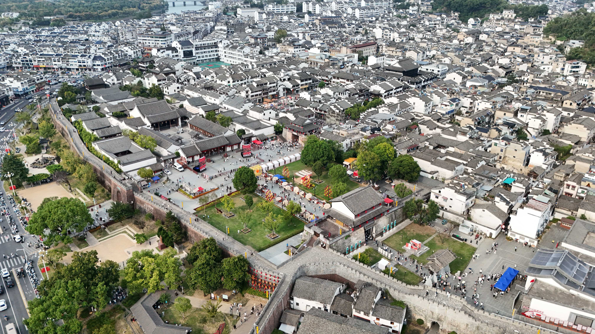
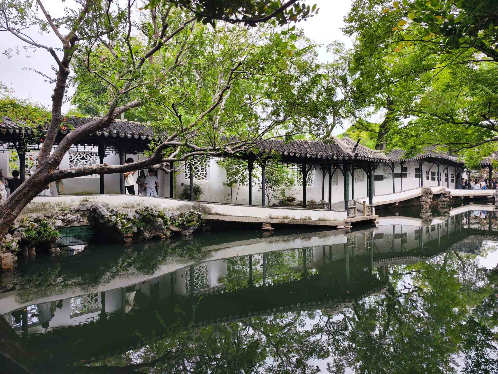
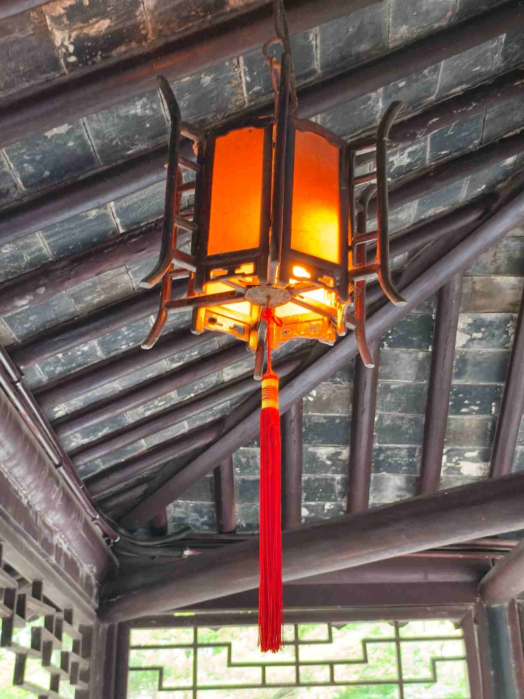
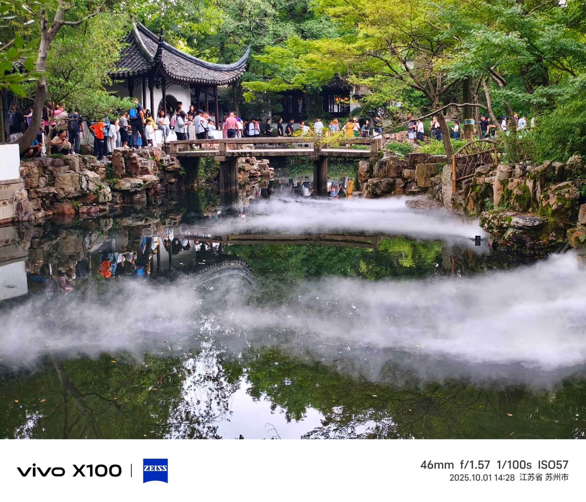
园林里的雾气把石桥藏得若隐若现，白墙黛瓦倒映在墨色水面，安静得可以听见树叶落下的声音。
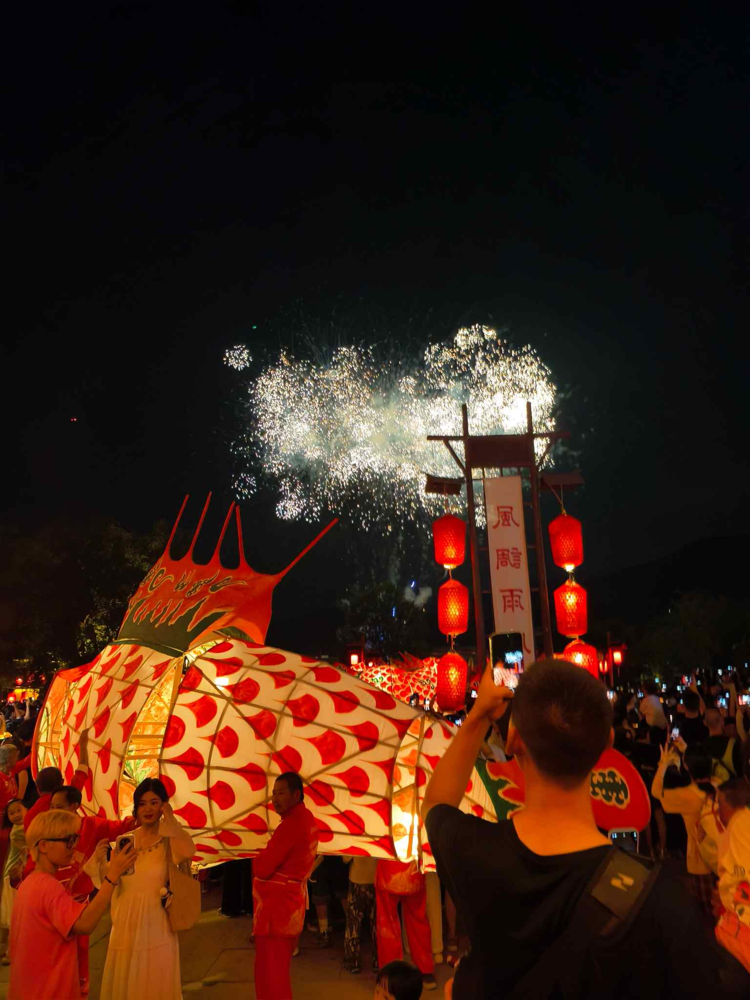
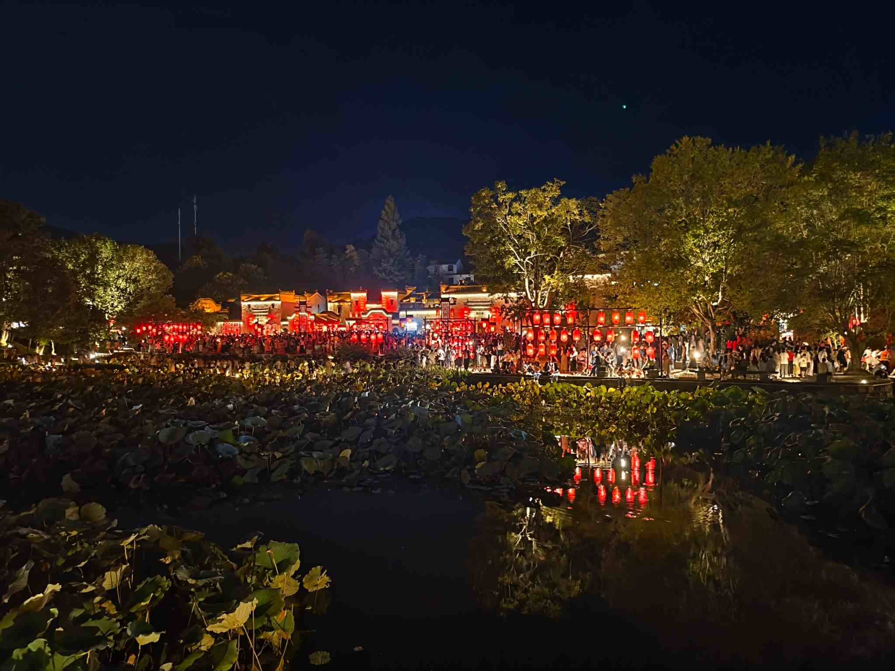
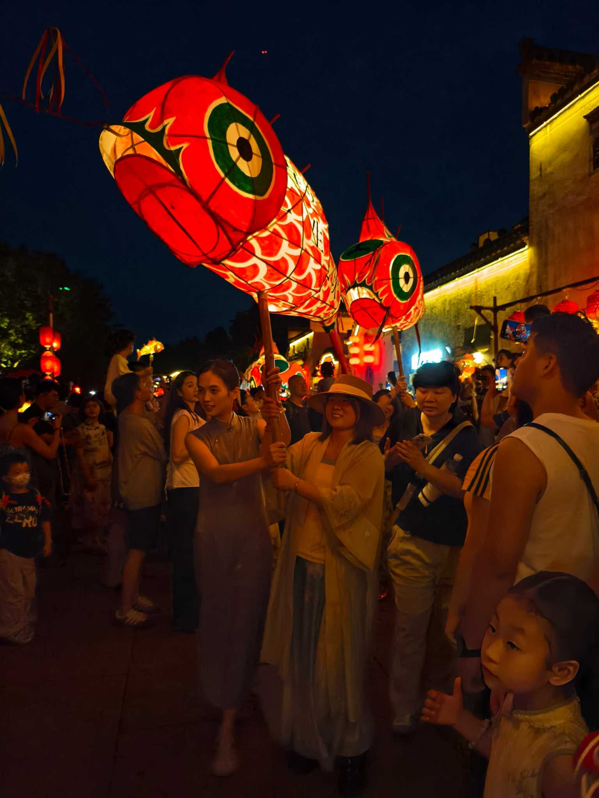
国庆的烟花在呈坎夜空绽放，龙形灯笼和满河灯火把整个古镇点得透亮。拍到内存卡警告也舍不得停手。
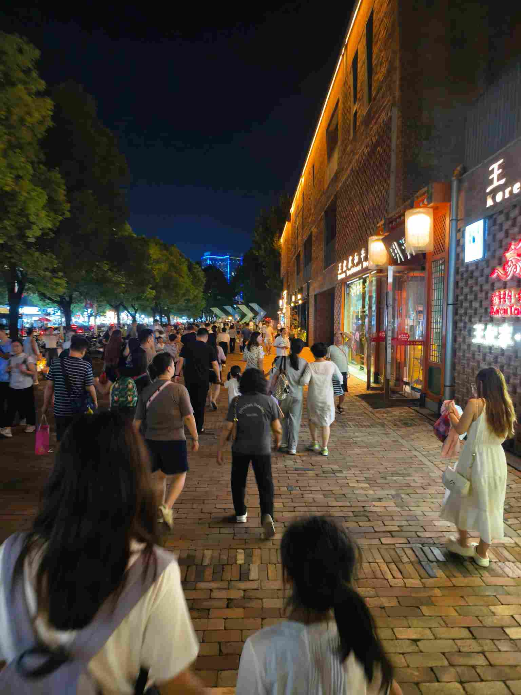
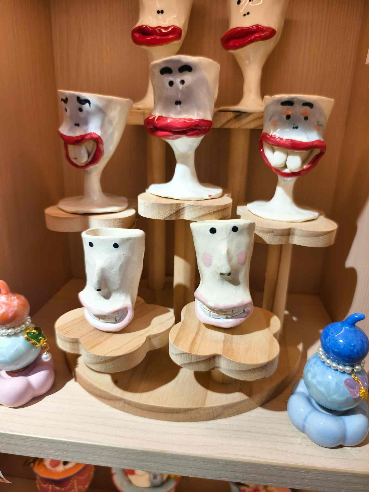
景德镇的夜市热闹得像不要钱，那些夸张表情的陶瓷杯真是让人走不动路——最后买了三个回家。
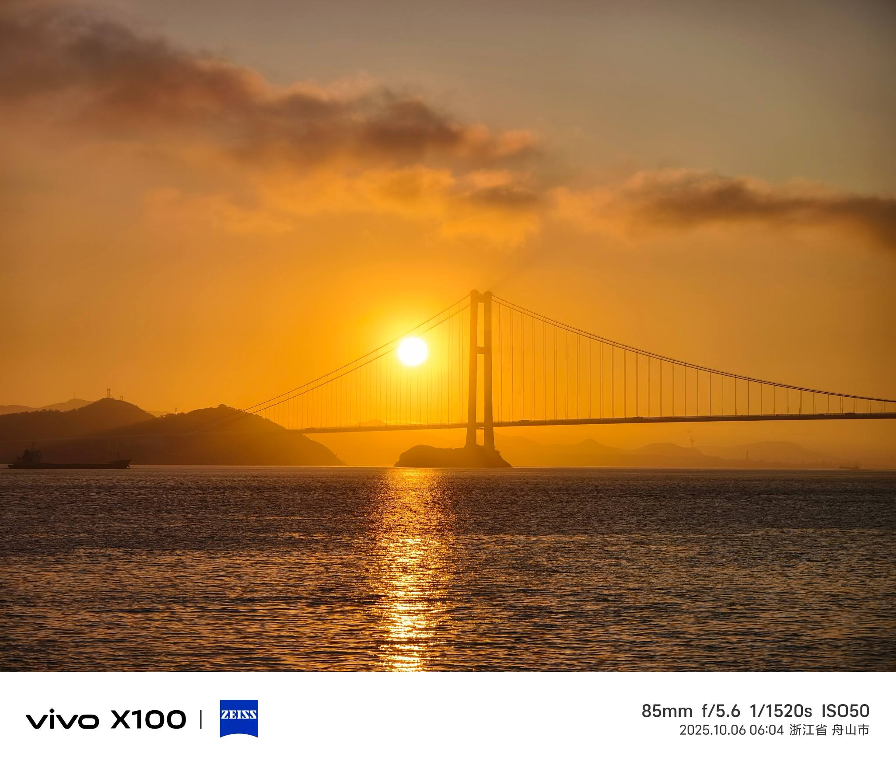
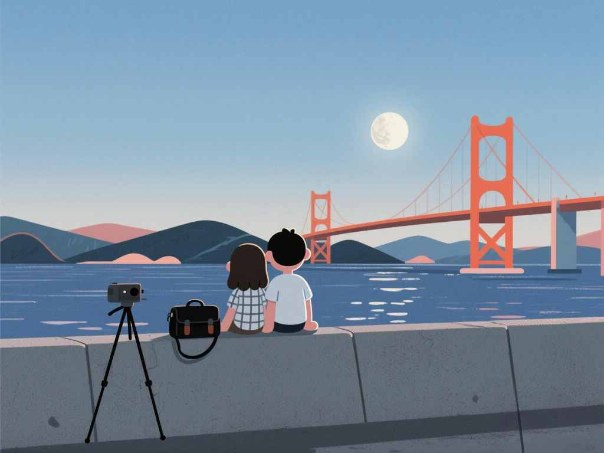
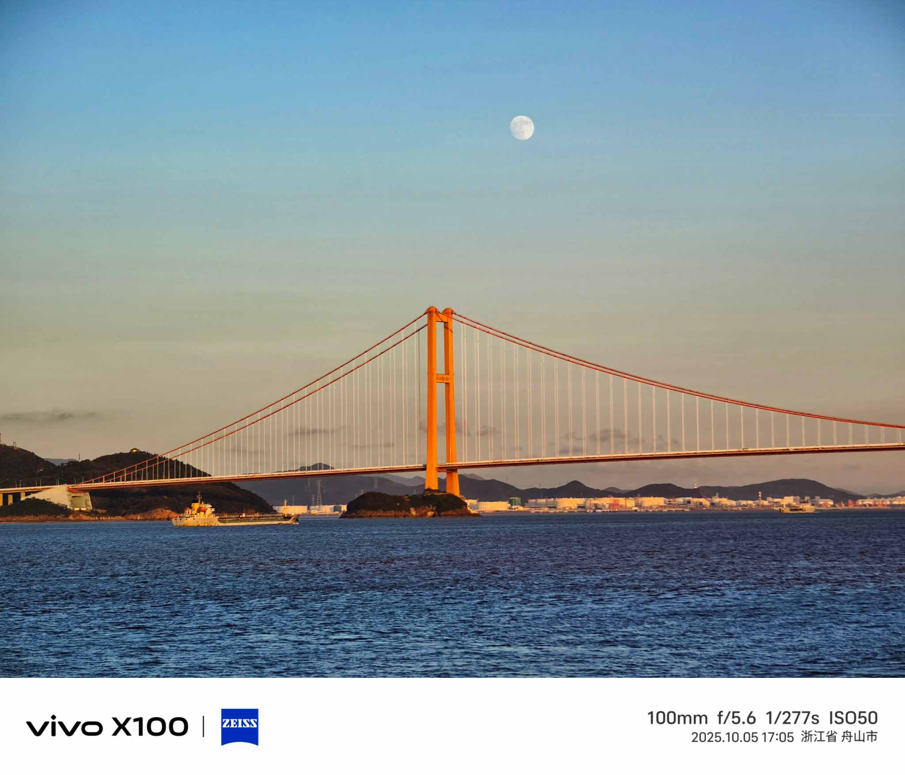
在海边坐到月亮爬上来，大桥的灯把海面切成一块一块的。两个人并排坐着，什么都不用说。
七天跑了五个地方，苏州看园子，黄山看烟火，景德镇淘瓷器，舟山看大桥。最后在上海收尾，结论：假期太短，下次还想去。